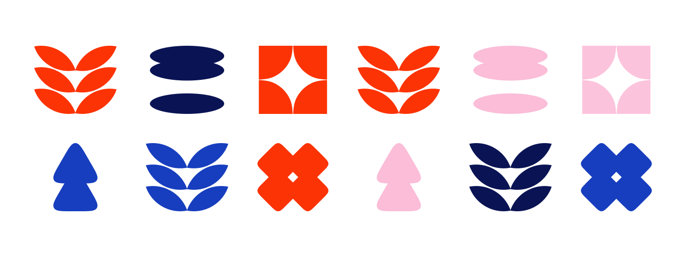
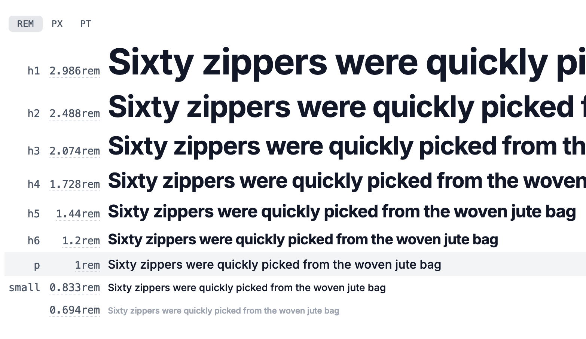

UI Elements: Understanding Their Purpose for Effective Design
Once I was reading a tutorial about color and the article was about “there are a bunch of color schemes, like monochromatic, analogous, complementary, etc.”, with all the description how to create each one. But at the end they wrote “Use them!” This confuses me. How is the reader supposed to learn how to use them? In my opinion, we need to understand the underlying purpose of each tool we can use, as well as an outcome. If we agreed that color is a tool.
Let me illustrate with an example.
If you work with a real tool like a hammer, you know its basic methods on an abstract level:
- You need a nail
- And a surface
- And a hammer to hit the nail
- The outcome is a hammered nail holds the pieces of wood together
As another example, consider a circuit board with electronic components, where each component is a tool to achive something specific. Electrical engineers know what each component does and what the outcome of each is. Imagine what a disaster it would be if they didn’t!
Each electronic component has its own outcome:
- Transistor a miniature device used to control or regulate the flow of electronic signals. Output: Control flow.
- Diode an electrical device that allows current to flow in only one direction. Output: filter flow.
- Resistor an electrical component that limits or regulates the flow of electrical current in an electronic circuit. Output: limit flow.
As designers, we need to know the outcome per each UI element of an interface components.
Designer’s Toolbox
Color as a tool. Outcome:
- To group things - our brain reacts instantly on colors to group objects. We can group visually by color, faster than we group by a shape (see image below)
- To control attention
- To set a mood
Even if we have the same shapes in the pattern, we ignore them as a group of similar things and see a group of similar colors first: 
Typography is a tool. Outcome:
- Visual hierarchy through font size and relationships between headings, subheadings, body text, and other elements
- Reinforce brand identity and emotional connection with users
- Tone and atmosphere. Can evoke professionalism, creativity, warmth, or urgency based on design objectives 
UI icons. Outcome:
- Quick communication. Sometimes faster than text. But be aware that text affects the meaning of icons. Users can quickly recognize the purpose of an item (e.g., a trash can icon for delete, a magnifying glass for search), speeding interactions and improving usability
- Improve accessibility (universal icons). Icons act as universally recognized symbols that can transcend language barriers and improve accessibility for a global audience
- Aesthetic enhancement. By carefully designing or selecting icons that are consistent with the brand’s style, icons can enhance the visual appeal of an interface while maintaining functionality
- Space efficiency, making the interface cleaner and less cluttered
- Feedback and status indication 
Images or photos in UI. Outcome:
- To set the mood
- To establish trust when needed. Imagine a e-shop that sells luxury watches and uses hand-drawn illustrations instead of a real photo. Can you trust that? A photo is a source for users to trust. An illustration is a source for users to set a mood when the level of trust is not as important
In Conclusion
So, the next time you’re crafting an interface, take a moment to consider the outcomes associated with each UI element. Ask yourself: What message am I trying to convey? What action do I want the user to take? How can I use these tools to create a positive and impactful user experience? By approaching design with intention and purpose, we can create interfaces that truly make a difference.